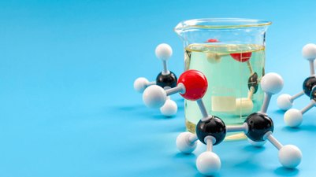

Sự tách và tinh chế

Image source: Topic 2 image sources
| Vietnamese | Sự tách và tinh chế |
|---|---|
| English | Separation and purification |
| Pronunciation | /ˌsepəˈreɪʃən ən ˌpjʊərɪfɪˈkeɪʃən/ |
| Word type | Noun |
Meaning (Vietnamese)
Quá trình tách các chất và loại bỏ tạp chất khỏi hỗn hợp.
Meaning (English)
The process of separating substances and removing impurities from a mixture
Example
Separation and purification are essential in organic chemistry.
Source of information: Topic 2 notes (see Sources)